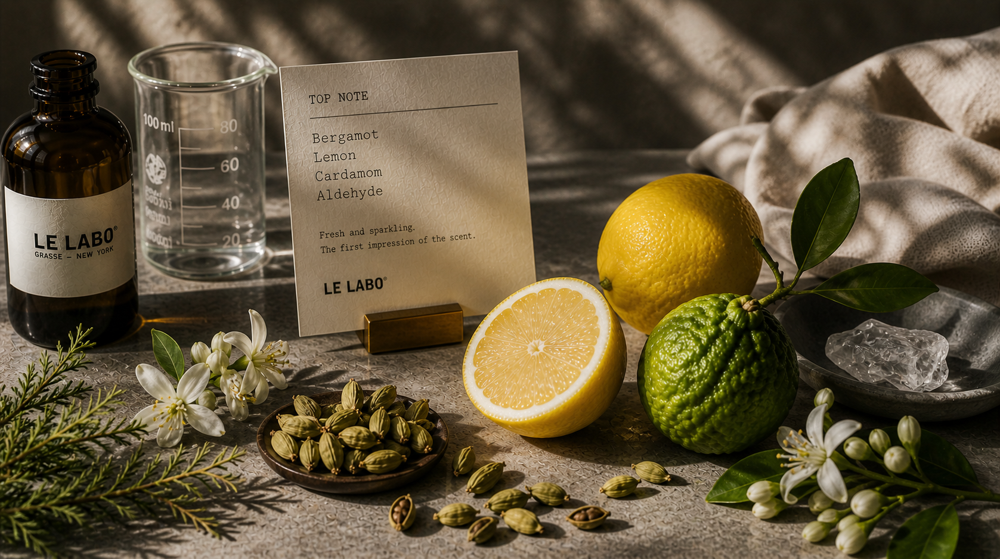
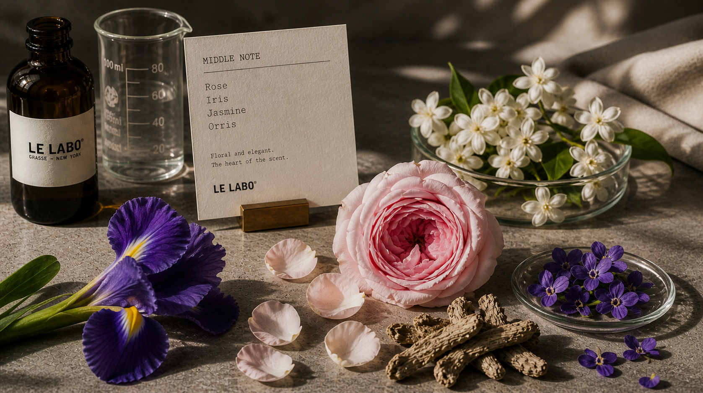
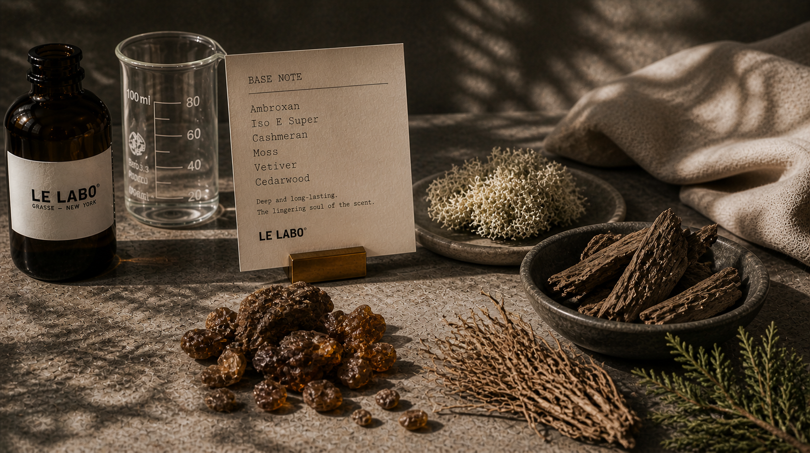
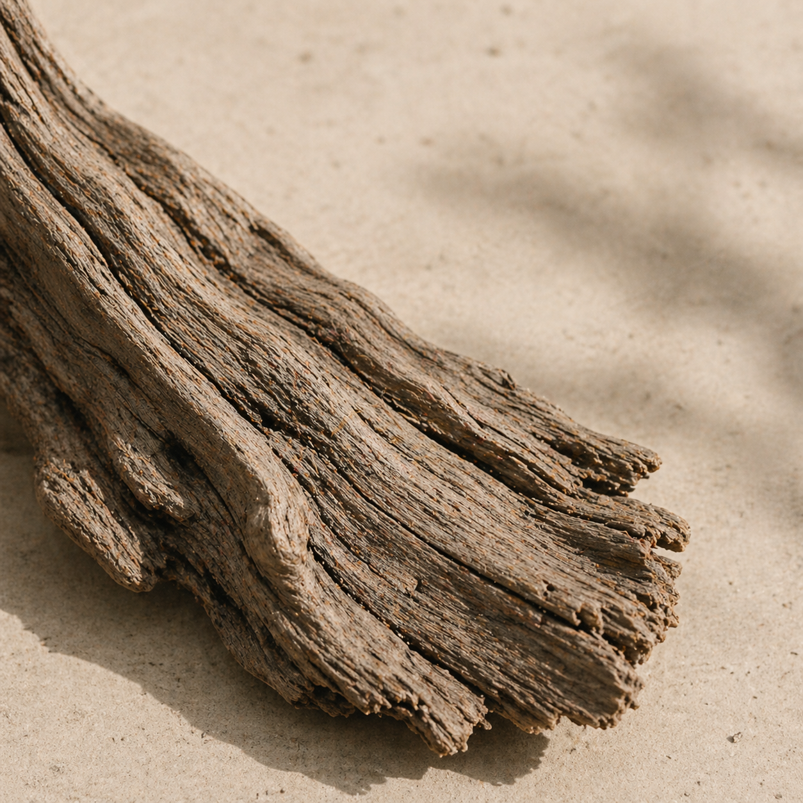

WOODY · BASE
Sandalwood
Santalum spicatum
호주 대륙의 거친 자연에서 자라난 샌달우드는 부드러우면서도 깊은 울림을 주는 향의 뼈대가 됩니다.
- Origin Western Australia
- Harvest 4–6월 · 21일
- Used in Santal 33
THE BOTANY OF SCENT
산지부터 추출, 배치 검증까지
향을 구성하는 원료의 전체 생애주기를 투명하게 공개합니다.
QUALITY SNAPSHOT
감성 설명을 넘어, 실제 선택에 필요한 핵심 품질 지표를 먼저 제시합니다.
수급 이력 추적 가능성
최적 수확 유효 기간
배치별 향료 균일도
저영향 수급 방식 채택률
NOTE STRUCTURE
Top · Middle · Base
세 층이 만드는 잔향의 깊이
가장 먼저 피어나는 향. 시트러스와 허브처럼 휘발성이 강한 원료가 첫인상을 만듭니다.

향의 중심을 지탱하는 층. 플로럴과 스파이스 노트가 체온과 반응하며 본연의 분위기를 완성합니다.

가장 오래 남는 깊이. 우디와 머스크가 체온과 섞이며 24시간 이상 잔향을 이어갑니다.

KEY INGREDIENTS
르라보를 정의하는 핵심 원료 4종 · 산지에서 병까지의 여정
Santalum spicatum
호주 대륙의 거친 자연에서 자라난 샌달우드는 부드러우면서도 깊은 울림을 주는 향의 뼈대가 됩니다.

Citrus bergamia
이탈리아 칼라브리아에서 재배되는 베르가못은 시트러스의
상쾌함과 플로럴의 우아함을 동시에 품고 있습니다.

Rosa × damascena
새벽의 짧은 시간에만 수확되는 로즈 다마세나는 꽃잎 한 장 한 장이 향의 밀도를 결정합니다.

Cedrus atlantica
아틀라스 산맥의 시더우드는 건조하면서 따스한 잔향으로, 베이스 노트에 견고한 깊이를 더합니다.
FOREST MATRIX
강도·지속력·계절 적합도를 한눈에 비교하여 실패 없는 선택을 돕습니다.
| INGREDIENT | SILLAGE | LONGEVITY | SEASON | BEST SCENE |
|---|---|---|---|---|
| SandalwoodSantalum spicatum |
FW
|
Night · Formal | ||
| BergamotCitrus bergamia |
SPSU
|
Day · Office | ||
| Rose DamascenaRosa × damascena |
SPSUFW
|
Daily · Smart | ||
| CedarwoodCedrus atlantica |
FW
|
Evening · Date |
전체 원료 행을 표시 중입니다.
SOURCING PROCESS
검증된 산지에서 연구소의 병까지 이어지는 투명한 여정
산지 선별과 파트너 인증을 통해
원료 편차 가능성을 사전 차단합니다.
⏱ 8 WEEKS
최적 수확 창에서 필요한 만큼만
채집해 향 농도 손실을 최소화합니다.
⏱ 14–28 DAYS
저온 압착과 증류를 병행해 탑 노트
선명도와 베이스 잔향을 함께 확보합니다.
⏱ 4 WEEKS
연구소 기준으로 배치 검수를 완료한
뒤 코드 기반으로 추적 가능하게 출고합니다.
⏱ 2 WEEKS
FAQ
원료와 수급 정책에 대한 고객의 궁금증을 투명하게 답변합니다.
자연 원료는 수확 시점의 기후에 따라 미세한 편차가 발생합니다. 르라보는 이를 브랜드의 정체성으로 수용하며, 배치 코드를 통해 모든 이력을 추적 관리합니다.
모든 르라보 원료는 동물실험을 거치지 않으며, 100% 비건 포뮬러를 원칙으로 합니다.
미개봉 24개월, 개봉 후 12개월을 권장합니다. 직사광선을 피해 15-20°C의 서늘한 곳에 보관하십시오.
FIND YOUR SCENT
좋아하는 원료에서 시작해 르라보의 컬렉션을 탐색하세요.